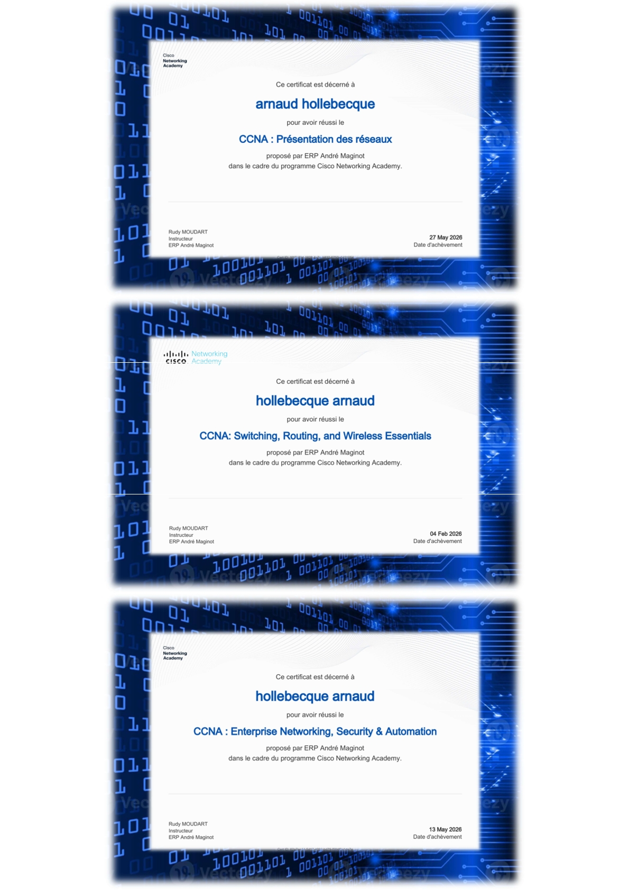
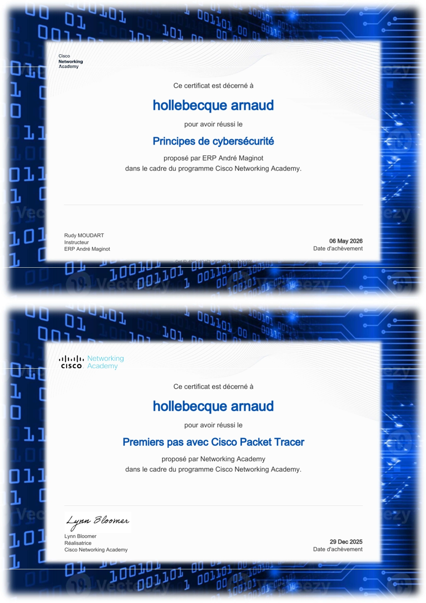
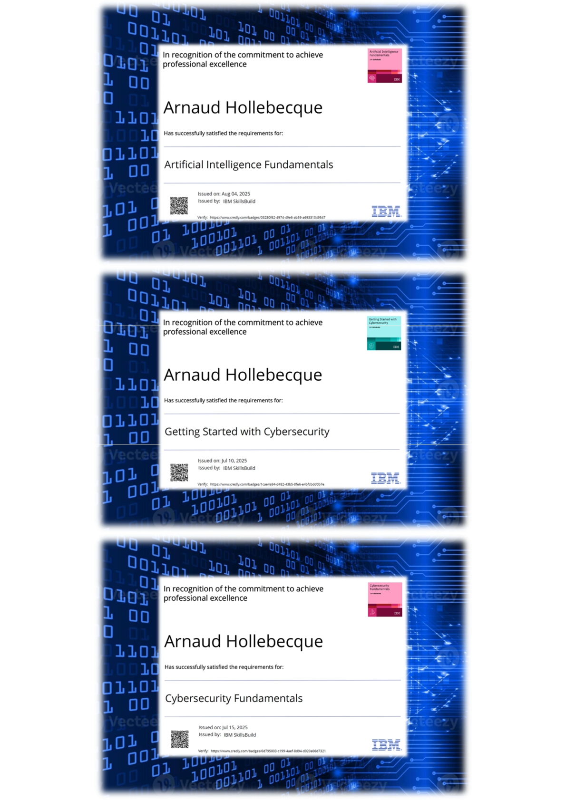
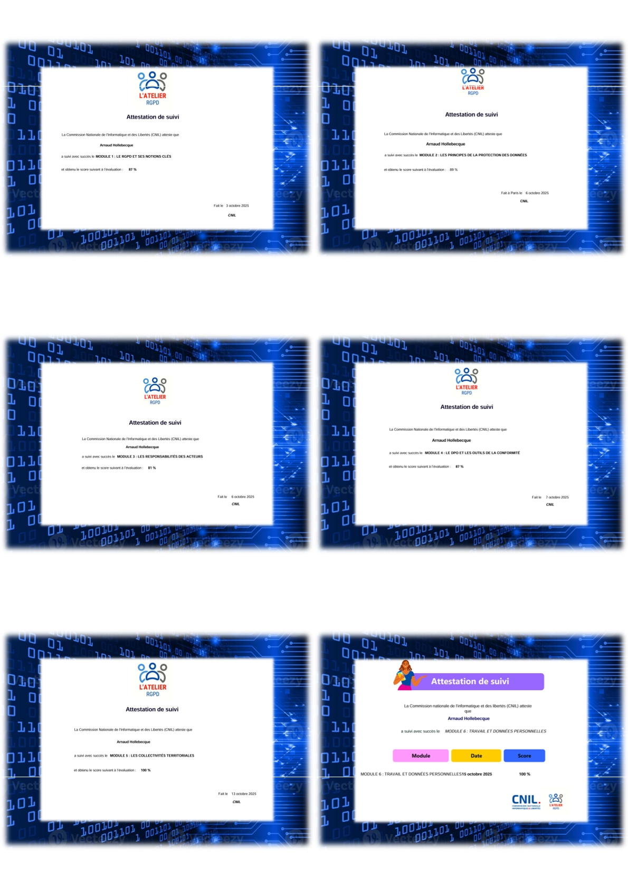

Compétences Techniques
Savoir-faire acquis durant le cursus BTS SIO SISR
Systèmes & Virtualisation
- Windows Server (AD DS, DNS, DHCP, GPO)
- Linux (Debian, Ubuntu Server)
- VMware ESXi & Proxmox VE
- Docker & Conteneurisation
Réseaux & Sécurité
- Routage & Commutation Cisco (VLAN, STP)
- Pare-feu pfSense & Fortinet
- Protocole VPN (OpenVPN, IPsec)
- Analyse de trames (Wireshark)
Outillage & Scripting
- PowerShell & Bash scripting
- Supervision (Zabbix, Nagios)
- Gestion de parc (GLPI)
- Gestion de versions (Git / GitHub)
Portfolio de Certifications
Feuilletez le livret officiel de mes diplômes et attestations




